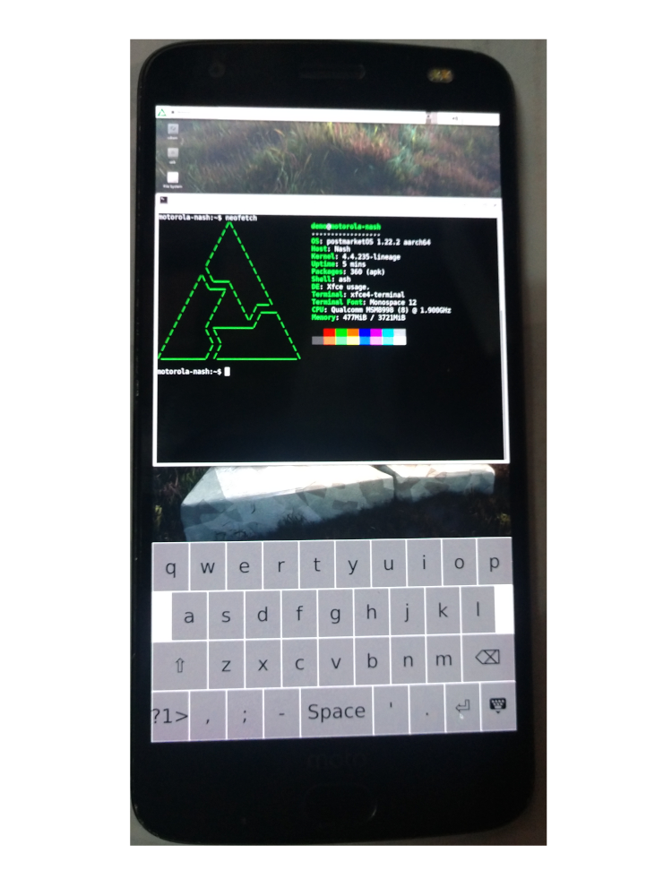

Motorola Moto Z2 Force (motorola-nash)
Jump to navigation
Jump to search
|
 Moto Z2 Force | |
| Manufacturer | Motorola |
|---|---|
| Name | Moto Z2 Force |
| Codename | motorola-nash |
| Released | 2017 |
| Category | testing |
| Original software | Android 7.1.1 (Nougat), upgradable to Android 9.0 (Pie) |
| Hardware | |
| Chipset | Qualcomm Snapdragon 835 (MSM8998) |
| CPU | Octa-core (4x2.35 GHz Kryo & 4x1.9 GHz Kryo) |
| GPU | Adreno 540 |
| Display | 1440x2560 (534 PPI) |
| Storage | 64 GB, 128 GB |
| Memory | 4 GB, 6 GB |
| Architecture | aarch64 |
{kind=link}
| USB Networking |
Broken
|
|---|---|
| Flashing |
Works
|
| Touchscreen |
Partial
|
| Display |
Works
|
| WiFi |
Broken
|
| FDE |
Broken
|
| Mainline |
Broken
|
| Battery |
Works
|
| 3D Acceleration |
Broken
|
| Audio |
Broken
|
| Bluetooth |
Broken
|
| Camera |
Broken
|
| GPS |
Broken
|
| Mobile data |
Broken
|
| SMS |
Broken
|
| Calls |
Broken
|
| USB OTG / USB-C Role switching | |
| NFC | |
| Accelerometer |
Broken
|
|---|---|
| Magnetometer | |
| Ambient Light | |
| Proximity | |
| Hall Effect | |
| Barometer | |
| Power Sensor | |
| Camera Flash | |
|---|---|
| Keyboard | |
| Touchpad | |
| USB-A | |
| HDMI/DP | |
| Ir TX | |
| Ir RX | |
| Stylus | |
| Haptics | |
| Ethernet | |
| FOSS bootloader | |
Contributors
- Fengjiongmax
Maintainer(s)
Users owning this device
- Fengjiongmax (Notes: owns multiple)
How to enter flash mode
- Hold down Power and Volume Down button.
Installation
installing pmos on device system_a makes pmos unable to find boot partition,but install pmos on sdcard works.
- make sure the bootloader on your device is unlocked.
-
pmbootstrap initand select motorola-nash pmbootstrap install --sdcard=[your sdcard device]- boot your device into fastboot and plug in the usb cable(use a usb 2.0 port on your pc if possible).
- this device has two os slots,so you can use one of them to install pmos,the other one to run android.
let's say I'm going to install pmos on slot a:
pmbootstrap chroot -- fastboot --set-active=a #replace a with b if you want to boot pmos from slot b.
# now if you want to boot into pmos without a pc, run this:
pmbootstrap flasher flash_kernel --partition='boot_a' # replace boot_a with boot_b if you want to boot pmos from slot b.
pmbootstrap chroot -- fastboot continue
# or if you don't want to write anything to the device:
pmbootstrap flasher boot
Note
- this device cannot install twrp directly into the device,but able to boot into it without installing,so if you want to see what's wrong with the kernel,you can boot the device into fastboot after a failed pmos boot,and then run
fastboot boot [you twrp.img location]
and then
adb pull /sys/fs/pstore/console-ramoops-0
and check what went wrong,some kernels may not generate such file.A vibration after issued a boot command is a good indication of whether a kernel works.
- I tried to install pmos into 'system_a',and then boot with a kernel flashed into 'boot_a',but initfs seems can not find boot partition.And if I specify boot partition in the cmdline (pmos_boot=/dev/block/sde17) , initfs-extra can't be found.